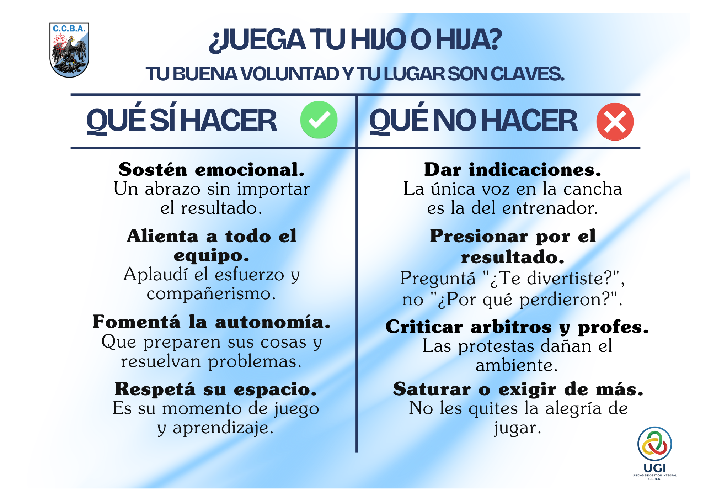

El deporte de mis hijos
El Rol de la Familia en el Deporte Formativo del CCBA
Les presentamos nuestra guía para acompañar a los chicos y chicas en su etapa deportiva. Nuestra misión principal es formar y desarrollar integralmente a niños, niñas y jóvenes a través de la actividad física y el deporte. Aspiramos a que nuestro modelo institucional sea la referencia nacional en la formación de deportistas que sean técnicamente competentes, emocionalmente inteligentes y socialmente inclusivos.
¿Cómo viven el deporte los chicos y chicas?
Para los niños, el deporte debe ser un espacio de aprendizaje seguro y estructurado. El cerebro infantil, especialmente entre los 6 y 10 años, experimenta emociones muy intensas pero posee un control inhibitorio que aún es inmaduro.
Por este motivo, los chicos necesitan un entorno predecible que los ayude a regular sus emociones, no un ambiente de presión extrema. Nuestro objetivo fundamental es generar en ellos el hábito de la actividad física y desarrollar personas que sean ágiles tanto física como mentalmente.
Valores y Respeto en la Tribuna
El proceso de socialización en el deporte nos exige transmitir valores innegociables como el respeto, la solidaridad, el esfuerzo, la humildad y el trabajo en equipo. Los adultos somos los principales modelos de conducta en este proceso.
Una interacción negativa o una crítica tiene un peso emocional mucho mayor en la mente del niño que un elogio, por lo que el ambiente debe construirse siempre sobre la base del refuerzo positivo.

Acompañando la información de la imagen, detallamos las conductas esperadas para hacer equipo entre el club y las familias:
Qué SÍ hacer
- Brindar sostén emocional mediante un abrazo sincero, sin importar cuál haya sido el resultado del partido.
- Alentar a todo el equipo aplaudiendo el esfuerzo general, para fomentar activamente la solidaridad y el trabajo en equipo.
- Fomentar la autonomía permitiendo que los chicos preparen sus cosas, lo cual ayuda a desarrollar su individualidad.
- Respetar su espacio personal, comprendiendo que el entrenamiento y el partido son sus momentos de juego y aprendizaje.
Qué NO hacer
- Dar indicaciones técnicas desde la tribuna, ya que la única voz directiva en la cancha debe ser la del entrenador.
- Presionar por el resultado preguntando por qué perdieron, en lugar de priorizar la pregunta sobre si se divirtieron.
- Criticar a los árbitros y profesores, dado que las protestas dañan el ambiente y atentan contra los valores institucionales de respeto y justicia.
- Saturar o exigir de más a los deportistas, quitándoles la alegría y la motivación fundamental de jugar.